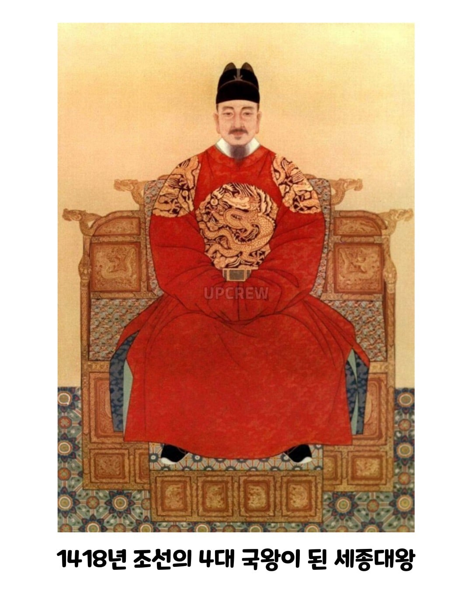
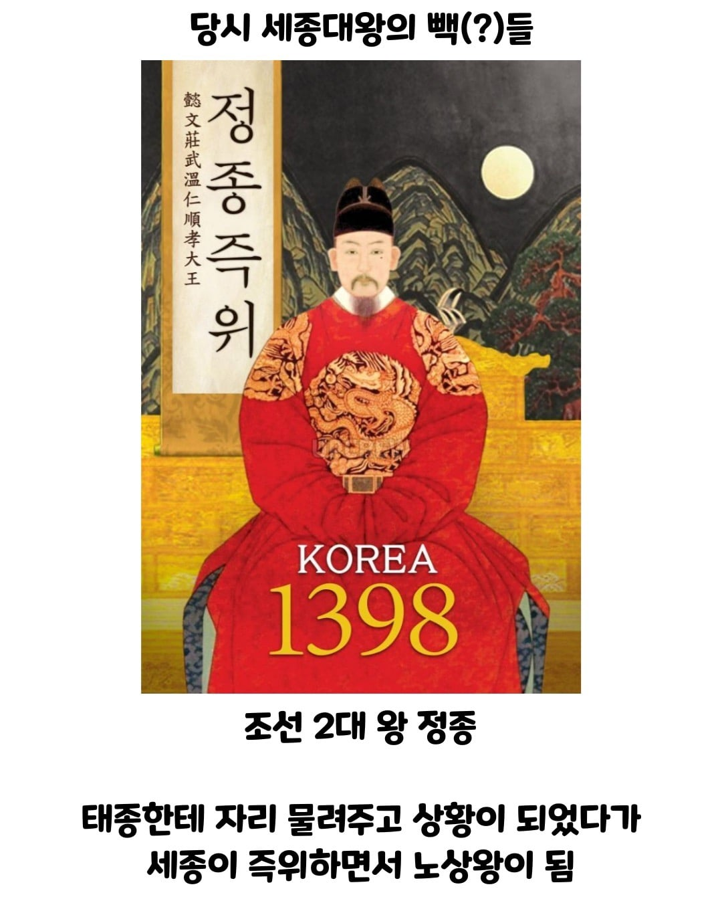
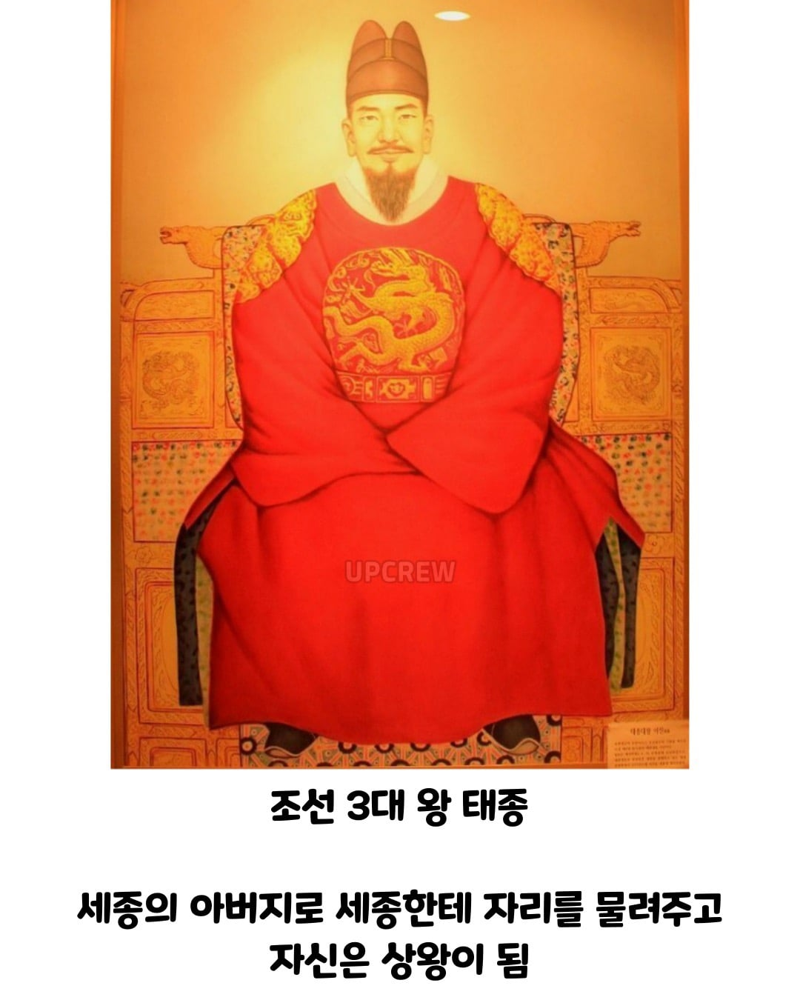
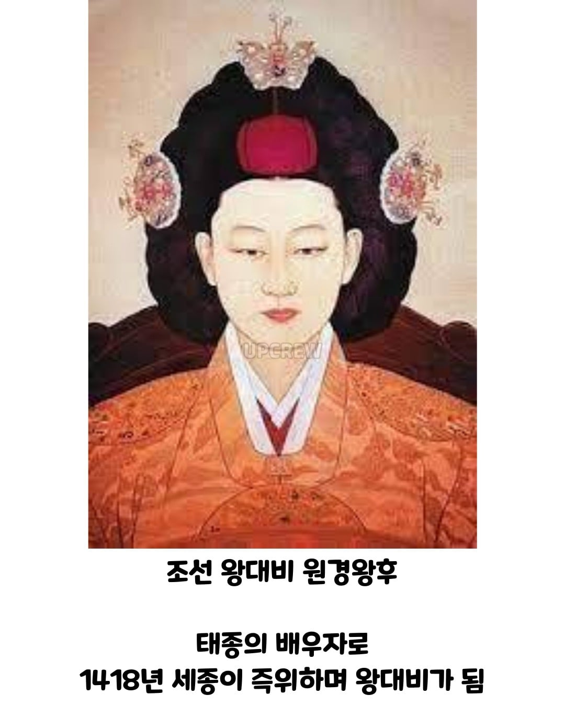
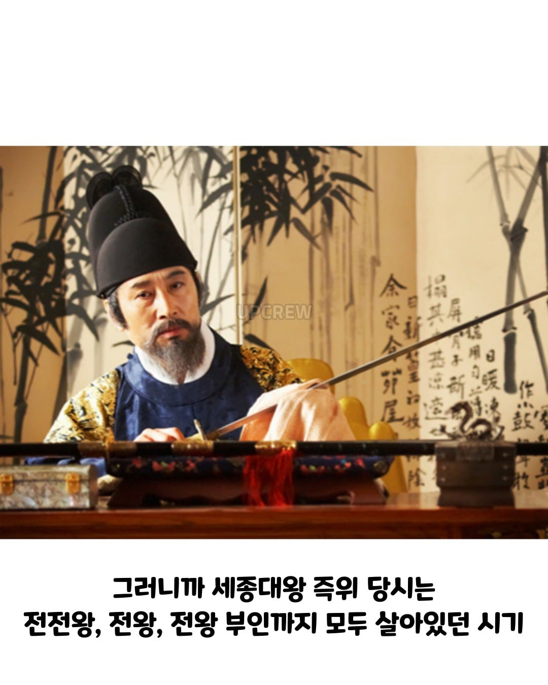
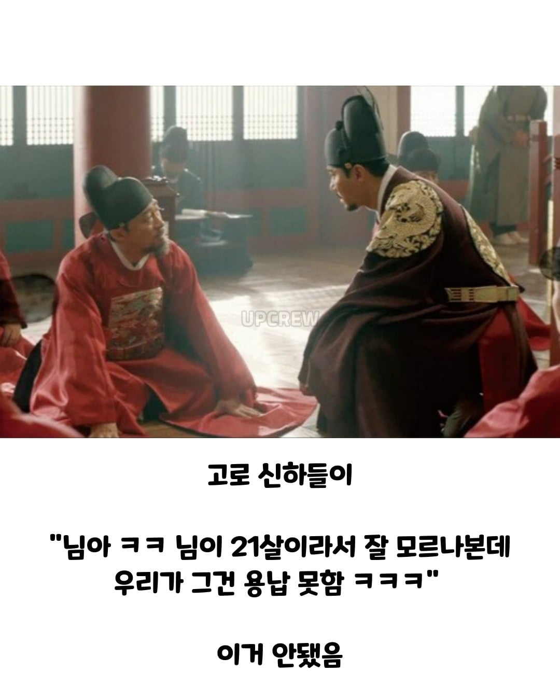

세종과 문종 시기도 비슷했음. 상왕까진 아니어도 세종 후기 시절은 세종이 뒤를 봐주고 문종이 대리청정하는 사실상 저 태종 세종이랑 같은 상황이었음.
바르샤 시절 딩요가 메시 우쭈쭈해주던 시기일까나
그거보고싶다 아머드 태종이 빔샤벨로 달써는거
tmdgmlqkqh야... 아머드 태종은 없는거야...
효령대군이 진짜 엄청 오래살아가지고, 13살때까지 할아버지 이성계가 살아있었고, 죽기전에는 연산군까지 보고 죽었음 ㅋㅋ
태정태세문단세예성연 까지 다본 인물. 2년만 더살았으면 중종까지 봤음 ㅋㅋ
제1차·2차 왕자의 난을 어렸을때 보고, 조카가 일으킨 계유정난을 봤으며, 폐비 윤씨 사사 사건까지
보고 죽은 살아있는 조선초기의 역사서 ㄷㄷ
그리고 조선에서 가장 오래살았던 인물로 이약(李瀹) 이라는 사람이 있는데
무려 118살까지 살았음.
이양반은 태어났을때 인종의 부인이 살아있을때 였는데, 죽을 때는 경종까지 살아있었음.
인명선광인효현숙경까지 걸쳐진 인물.
오죽했으면 숙종때 진짜 살아있는게 맞냐며 특별 조사관을 파견했을 정도였음 ㅋㅋ
호우... 왜란과 호란에 경신대기근까지 겪은 분이네
진짜로 이분이 라떼는 시전하면
걍 전부 아닥해야됐네 ㅋㅋㅋㅋㅋㅋㅋ
장수한줄은 알았는데 그정도까지 일 줄이야
이런거 보면 어느정도는 필수적으로 선위 하면서 뉴비왕 키워주기 했었어야 했나 싶기도 하고…. 근데 또 언제 뒤질지 모르는데 타이밍 잡기도 애매하고
조선 시대극 보면 살아있는동안 양위하려고 할때마다 신하들이 너 멀쩡한데 왜 그러냐 하고 세자도 아버지 멀쩡한데 제가 어찌 감히 본인 불효자 만들지 마시옵고 빼액 하는데 어찌그럼
그치만 조까라고 진행한 왕들도 꽤 있잖어
님 댓글내용의 시선으로 조선사를 다시보면
왕권과 신권의 조화와 견제의 철학이담겨있음
그렇게 보면
계유정난과 선조 인조 고종까지
조선사 스캔들이 좀 다르게 보임
태종이 사병철폐 시킨게 하나회 날려버린거랑 비슷한 느낌일려나
ㅇㄱㄸ
ㅇㄱㄸ야?
사실 왕권강화와 왕실의 영속성을 를 위해 사병을 다 날려야 할 필요성이 매우 필요하긴 했음. 당장 자기 집안이 조선을 건국할 때 태종의 처가인 원경왕후 집안이 유력 토호였던 민씨 일가인데 처가 도움을 크게 받았음. (태종 즉위 후 처가를 날려버린 것도 그게 원인 중 하나임)
님이 잘 모르시나 본데, 라고 하면 바로 달려가서 물어볼 건데 ㅋㅋㅋㅋ
한석규 가 역모다!!! 한게 생각나는구만
과거부터 이렇게 하지 않았사옵니다 전하
과거 : ??
세종대왕 자체도 정치적으로도 학문적으로도 스텟이 만땅이라서
왕권에대한 지휘력이 상당했을듯 그상황에 선대 윗분들까지 있으니 천하무적 이었지 않나 싶네
밖에 잘 안나가고 실내에서만 살다보니까 몸땡이가 안좋아서 문제였지
근데 신기하긴 하네. 한국사를 잘 아는건 아니지만 저렇게 양위를 하면서 막 즉위한 왕 뒷배 봐주던 시절이 다른 시기에는 없었던거 같은데